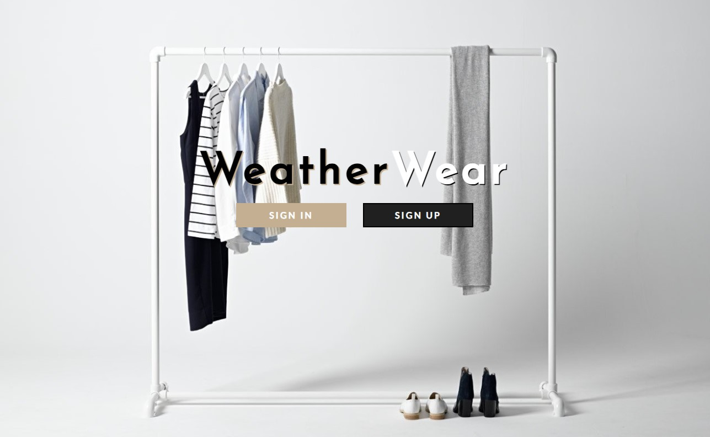

Hi, I'm Beverly!
Former Salesforce Software Engineer.

Developer
My coding journey began unexpectedly while personalizing my blog back in the early 2000s, where I self-learned HTML and CSS, revealing a world I didn't even realize was a profession until a chance interaction with my father. This curiosity led me to pursue a Computer Science degree from Purdue University. While at Salesforce, I championed accessibility and user experience as a Software Engineer. One notable project I led was the Summer '23 feature enhancement for Flow Builder, focusing on user-centric and inclusive improvements. This project was celebrated industry-wide as one of the top Salesforce features of that release for its transformative impact on user experience.
Designer
Growing up, I was constantly immersed in creative activities - drawing, painting, and daydreaming about what I could create next. I chose to minor in Anthropology as I was also interested in human interactions and behavior among individuals in society and among diverse communities. As a Software Engineer, I utilized this knowledge and interest to develop efficient solutions and create inclusive and empathetic designs. I aspire to create beautiful designs that are easy to use, enjoyable and most importantly, make a positive impact on people’s lives.
Collaborator
I've always recognized the benefits of collaboration and the richness of insights from constructive feedback. While at Salesforce, I played a multifaceted role in shaping solutions for our users. Collaborating with UX teams and Product Managers, I brainstormed ideas, undertook research, and deployed code with my engineering peers. I also partnered with other teams to discuss accessibility shortcomings and solutions in our products. With every solution, I intend on designing and engineering with growing empathy and inclusivity for the user - an endeavor made achievable through ongoing teamwork and open communication.
Leader
At Salesforce, I proactively assumed the role of Accessibility Champion for my team, committing myself to ensure our product consistently caters to individuals of varying capabilities. While at Purdue, I served as the President of the Society of Asian Scientists and Engineers (SASE). With the support of my leadership team, we boosted the organization's membership by a whopping 475%. Additionally, I held a position as a Teaching Assistant for the Problem Solving And Object-Oriented Programming course, and played a mentoring role in numerous CS minority initiatives.
After a fulfilling seven-year journey in software development, I came to understand that my true passion lies in problem-solving through shaping the user experience of the features I develop. This realization has driven me to pursue a graduate degree in human-centered design starting Fall 2024. I am determined to build a strong foundation in UI/UX tools and frameworks, cultivate a deep understanding of the relationship between people and technology, and thrive under the mentorship of pioneers in the field.
I aspire to create thoughtfully designed user interfaces that look good and work even better.
Aside from coding, I play the piano and cello, stream games like Valorant and Minecraft on Twitch, and love spending time with my cat called Boba 😸.
Java
Typescript
Python
Javascript
HTML & CSS
C
SQL
R
React
NodeJS
Firebase
MongoDB
Express
Hugo
Go
Angular 8
Google Maps API
Google Calendar API
Microsoft Emotion API
Dark Sky API

Click the logo to find out what I've been doing!
Grace Hopper Conference Scholarship 2018
Purdue Computer Science Department
Freshman of the Year 2017
Society of Asian Scientists and Engineers (SASE)
Emerging Leader 2017
Society of Asian Scientists and Engineers (SASE)